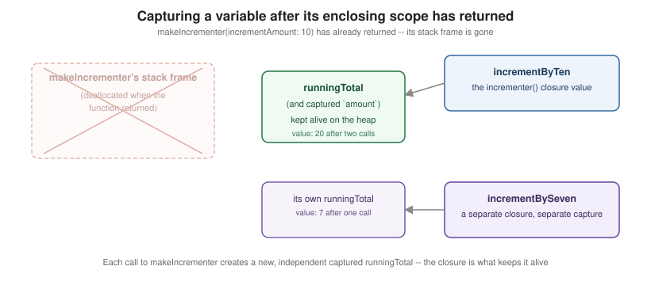

Closures
|
This content was generated with the assistance of AI and should be verified against the official documentation before being relied on in production. |
A closure is a self-contained block of functionality that can be passed around and used in code — like a function value from Functions, but written inline and, crucially, able to capture constants and variables from the scope where it was created.
Closure Expressions and the sorted(by:) Progression
let names = ["Chris", "Alex", "Ewa", "Barry", "Daniella"]
func backward(_ s1: String, _ s2: String) -> Bool { s1 > s2 }
var reversed = names.sorted(by: backward) // a named function works fine...
reversed = names.sorted(by: { (s1: String, s2: String) -> Bool in s1 > s2 }) // ...as does a full closure expression
reversed = names.sorted(by: { s1, s2 in s1 > s2 }) // inferred from context: no types, no `-> Bool`
reversed = names.sorted(by: { s1, s2 in return s1 > s2 }) // single expression: `return` may be dropped
reversed = names.sorted(by: { s1, s2 in s1 > s2 })
reversed = names.sorted(by: { $0 > $1 }) // shorthand argument names replace s1, s2
reversed = names.sorted(by: >) // an operator method IS a function valueEach rewrite above is equivalent; Swift infers a closure’s parameter and return types from context (here, from
sorted(by:)'s expected (String, String) -> Bool), which is what lets the full six-line closure expression
shrink down to > alone once every inferable piece is inferred.
Trailing Closures
func someFunctionThatTakesAClosure(closure: () -> Void) { closure() }
someFunctionThatTakesAClosure(closure: { // without trailing closure syntax
print("inside the closure")
})
someFunctionThatTakesAClosure { // with trailing closure syntax: the () disappears too
print("inside the closure")
}
reversed = names.sorted { $0 > $1 } // sorted(by:) called with a trailing closure
func loadPicture(named name: String,
completion: (Image) -> Void,
onFailure: () -> Void) { /* ... */ }
loadPicture(named: "sunset") { picture in // multiple trailing closures: first is unlabeled,
print("loaded \(picture)")
} onFailure: { // every one after is labeled at the call site
print("couldn't load the picture")
}
struct Image {}When a function’s last parameter is a closure, the call can move that closure outside the parentheses as a
trailing closure; if it’s the function’s only argument, the parentheses can be dropped entirely (as with
someFunctionThatTakesAClosure above). A function with several trailing-closure parameters supports multiple
trailing closures: the first keeps no label, and every one after it is written with its argument label, as
onFailure: is above.
Capturing Values and Reference Semantics
func makeIncrementer(incrementAmount amount: Int) -> () -> Int {
var runningTotal = 0
func incrementer() -> Int {
runningTotal += amount // captures both `runningTotal` and `amount` by reference
return runningTotal
}
return incrementer
}
let incrementByTen = makeIncrementer(incrementAmount: 10)
print(incrementByTen()) // 10
print(incrementByTen()) // 20 -- runningTotal persisted between calls, even though makeIncrementer returned
let incrementBySeven = makeIncrementer(incrementAmount: 7)
print(incrementBySeven()) // 7 -- its own, independent runningTotal
print(incrementByTen()) // 30 -- unaffected by incrementBySeven's separate capture
A closure captures the variables and constants from its surrounding context by reference (not a snapshot of
their value at creation time), and Swift keeps whatever storage those captures need alive for as long as the
closure itself is alive — which is exactly how runningTotal survives makeIncrementer returning: the closure
holds the only remaining reference to it, so Swift’s memory management (see
Automatic Reference Counting) keeps it on the
heap instead of freeing it with the rest of that stack frame. Two separate calls to makeIncrementer produce two
closures with two independent captured variables, as incrementByTen and incrementBySeven show.
Escaping vs. Non-Escaping Closures
var completionHandlers: [() -> Void] = []
func someFunctionWithEscapingClosure(completionHandler: @escaping () -> Void) {
completionHandlers.append(completionHandler) // stored beyond the function call -- must be @escaping
}
func someFunctionWithNonEscapingClosure(closure: () -> Void) {
closure() // called and done before the function returns: the default
}
class SomeClass {
var x = 10
func doSomething() {
someFunctionWithEscapingClosure { self.x = 100 } // must write `self.` explicitly -- a signal it may escape
someFunctionWithNonEscapingClosure { x = 200 } // no `self.` required
}
}A closure parameter is non-escaping by default: the compiler can guarantee it is called before the function it
was passed to returns, and can therefore optimize its storage more aggressively. Marking a parameter @escaping
tells the compiler the closure may be stored and called after the function returns (into an array, a property,
a completion handler dispatched later) — and inside such a closure, referencing a captured class instance’s
members requires writing self. explicitly, a deliberate reminder that the closure may be keeping that instance
alive well past the current scope.
Autoclosures
var customersInLine = ["Chris", "Alex", "Ewa", "Barry", "Daniella"]
func serve(customer customerProvider: @autoclosure () -> String) {
print("Now serving \(customerProvider())!")
}
serve(customer: customersInLine.removeFirst()) // reads like an ordinary argument, not a closure literal
func serveMany(customerProvider: @autoclosure @escaping () -> String) {
DispatchQueue.main.async {
print("Now serving \(customerProvider())!") // an autoclosure can also escape, marked the same way
}
}@autoclosure automatically wraps an ordinary-looking argument expression (customersInLine.removeFirst()) in a
closure, deferring its evaluation until the parameter is actually called inside the function body — useful for
APIs like assert(_:_:) where the argument expression should only run (and only pay its cost) when actually
needed, while keeping the call site free of explicit { } braces.
Capture Lists
class HTMLElement {
let name: String
let text: String?
lazy var asHTML: () -> String = { [unowned self] in // `self` captured unowned: never outlives self here
if let text = self.text {
"<\(self.name)>\(text)</\(self.name)>"
} else {
"<\(self.name) />"
}
}
init(name: String, text: String? = nil) {
self.name = name
self.text = text
}
}
class ImageLoader {
var onComplete: (() -> Void)?
func start() {
onComplete = { [weak self] in // `self` captured weak: may become nil, so Optional
guard let self else { return }
self.finish()
}
}
func finish() { print("done") }
}
var multiplier = 3
let capturedByValue = { [multiplier] in print(multiplier) } // [multiplier] alone captures a copy, not a reference
multiplier = 100
capturedByValue() // still prints 3A capture list — [weak self], [unowned self], or a plain name like [multiplier] — overrides a closure’s
default by-reference capture for the names listed. weak produces an Optional reference that becomes nil if
the referenced object is deallocated (safe, requires unwrapping); unowned produces a non-optional reference
that traps if accessed after deallocation (use only when the closure’s lifetime is provably no longer than the
captured object’s); a plain name captures a copy of that value’s state at closure-creation time instead of a
live reference. Capture lists exist chiefly to avoid the strong reference cycles covered in
Automatic Reference Counting.
@Sendable Closures
func runConcurrently(_ work: @escaping @Sendable () -> Void) {
Task { work() } // safe to hand to a different isolation domain/thread
}
var counter = 0
runConcurrently {
// counter += 1 // error: a @Sendable closure cannot capture a mutable var from outside by reference
print("running")
}A @Sendable closure is one the compiler has checked is safe to pass across concurrency-isolation boundaries: it
can only capture values that are themselves Sendable, and it cannot capture a mutable variable by reference
(only an immutable let, or a value captured by copy). Closures passed to Task { } and most concurrency APIs
are implicitly required to be @Sendable — see
Actors, Isolation and Sendable for the full
Sendable model this checking is built on.
Closures vs. Named Functions
A named function, as covered in Functions, is really a special
case of a closure: one with a name, defined at a fixed location, that captures nothing from an enclosing scope
(a global function) or captures its enclosing function’s locals (a nested function). A closure expression is
the same underlying construct written inline, anonymously, specifically so it can be created on the fly and
handed to something else — sorted(by:), a completion handler, a Task — as this page’s examples do
throughout; reach for a named function once a piece of logic is reused across call sites or benefits from a name
that documents its intent.
Worked Example: What a Closure Really Captures
A closure is a function plus the variables it uses from its surroundings. The surrounding variables are captured by reference by default, which is both the source of the closure’s power and of most of its surprises. The program below runs six small experiments on the bookshelf domain.
// A loan counter shared by several closures.
func makeCounter() -> (lend: () -> Int, current: () -> Int) {
var loans = 0 // lives on the heap, because escaping closures capture it
return (
lend: { loans += 1; return loans },
current: { loans }
)
}
let counter = makeCounter()
_ = counter.lend(); _ = counter.lend()
print(counter.current()) // both closures share ONE captured variable
// Captured by reference: later changes are visible. Capture list: a snapshot at creation time.
var limit = 3
let byReference = { limit }
let bySnapshot = { [limit] in limit }
limit = 10
print(byReference(), bySnapshot())
// Non-escaping (default) versus escaping closures.
func applyNow(_ body: () -> Void) { body() } // runs before returning
final class Scheduler {
private var pending: [() -> Void] = []
var count: Int { pending.count }
func later(_ body: @escaping () -> Void) { pending.append(body) } // outlives the call
func runAll() { pending.forEach { $0() } }
}
let scheduler = Scheduler()
applyNow { print("now") }
for title in ["Emma", "Kim"] {
scheduler.later { print("later:", title) }
}
print("queued", scheduler.count)
scheduler.runAll()
// @autoclosure delays evaluation of an argument expression.
func logIfDebug(_ message: @autoclosure () -> String, enabled: Bool) {
if enabled { print(message()) }
}
func expensiveSummary() -> String { print("(computing)"); return "42 books" }
logIfDebug(expensiveSummary(), enabled: false)
logIfDebug(expensiveSummary(), enabled: true)
// Closures capture classes by reference: mutations of the object are seen both ways.
final class Tally { var value = 0 }
let tally = Tally()
let bump = { tally.value += 1 }
bump(); bump()
print(tally.value)
// Sorting with a multi-key closure.
struct Book { let title: String; let year: Int }
let books = [Book(title: "Kim", year: 1901), Book(title: "Emma", year: 1815), Book(title: "Dune", year: 1965)]
print(books.sorted { ($0.year, $0.title) < ($1.year, $1.title) }.map(\.title))2
10 3
now
queued 2
later: Emma
later: Kim
(computing)
42 books
2
["Emma", "Kim", "Dune"]-
Shared captured state.
lendandcurrentreturned bymakeCounterclose over the sameloansvariable, so after twolend()callscurrent()returns 2. The variable no longer lives on the stack: the compiler moves it into a heap box owned by the closures, which is why returning the closures from the function is safe. -
Reference versus snapshot.
byReferencereadslimitat call time and sees 10;bySnapshotlistedlimitin a capture list[limit], copying the value when the closure was created, and still reports 3. A capture list is how you opt out of sharing, and it is also whereweakandunownedare written (see Automatic Reference Counting). -
Non-escaping by default.
applyNowcalls its closure before returning, so the compiler can keep the captured state on the stack and needs no annotation.Scheduler.laterstores the closure, so the parameter must be marked@escaping; omitting it is a compile error that tells you the closure may outlive the call. -
Each loop iteration captured its own
title. The two queued closures printEmmaandKimrather than the last value twice, because the loop constant is a fresh binding per iteration. -
@autoclosuredelays evaluation. The expensive call is wrapped in a closure by the compiler, so(computing)is printed only for the call withenabled: true. The standard library’s&&,||,??andassertuse the same trick. -
Classes are captured by reference to the object, so mutating
tally.valuethrough a closure is visible to everyone holding the instance.
context points at box] C2[closure current
context points at box] end L --> BOX C1 --> BOX C2 --> BOX
Pitfalls
-
Capturing
selfin an escaping closure stored byselfis a reference cycle; use[weak self]. In an escaping closure inside a class method, Swift requires an explicitself.(or a[self]capture) to make the capture visible. -
A capture list copies at closure creation; reading a stale snapshot instead of the live value is a common bug when
[value]is added to silence a warning. -
Escaping closures capturing a non-
Sendablevalue and running on another actor are errors in Swift 6 mode; mark closures@Sendableor capture onlySendablevalues. -
A closure with many statements infers poorly: give its parameters and result type explicitly when type-check times grow or error messages mislead.
See Also
-
Functions — function types, and named functions as this page’s non-anonymous counterpart.
-
Automatic Reference Counting — strong reference cycles through closures, and the full
weak/unownedmodel behind capture lists. -
Actors, Isolation and Sendable —
Sendablein full, and how it governs what a closure may capture across isolation domains. -
Functional Programming — closures as the building block behind
map/filter/reduceand function composition.